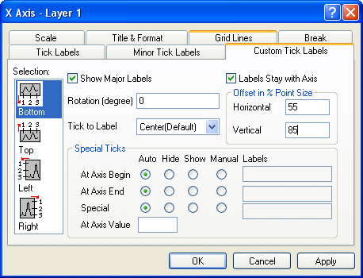

Inhalt |
| Horizontal |
Standardmäßig ist dies die untere und obere X-Achse. Wenn Sie allerdings die X- und Y-Achsen vertauscht haben (Grafik: X-Y-Achsen vertauschen) oder Sie die Achse eines Balken-, Fließendem Balken- oder Gestapeltem Balkendiagramm bearbeiten, ist das horizontale Symbol mit der linken und rechten Y-Achse verbunden. |
|---|---|
| Vertikal |
Dies ist standardmäßig die linke und rechte Y-Achse. Wenn Sie allerdings die X- und Y-Achsen vertauscht haben (Grafik: X-Y-Achsen vertauschen) oder Sie die Achse eines Balken-, Fließendem Balken- oder Gestapeltem Balkendiagramm bearbeiten, ist das vertikale Symbol mit der linken und rechten X-Achse verbunden. |
| Z-Achsen |
Dies sind standardmäßig die vordere und hintere Z-Achse. |
| Unten |
Dies ist standardmäßig die untere X-Achse (außer die X- und Y-Achse wurden vertauscht oder wenn Sie Balkendiagramme bearbeiten). |
| Oben |
Dies ist standardmäßig die obere X-Achse (außer die X- und Y-Achse wurden vertauscht oder wenn Sie Balkendiagramme bearbeiten). |
| Links |
Dies ist standardmäßig die linke Y-Achse (außer die X- und Y-Achse wurden vertauscht oder wenn Sie Balkendiagramme bearbeiten). |
| Rechts |
Dies ist standardmäßig die rechte Y-Achse (außer die X- und Y-Achse wurden vertauscht oder wenn Sie Balkendiagramme bearbeiten). |
| Vorne |
Dies ist standardmäßig die vordere Z-Achse. |
| Hinten |
Dies ist standardmäßig die hintere Z-Achse. |
Nachdem Sie die Bearbeitung der Achseneigenschaften abgeschlossen haben, können Sie jede beliebige andere Achse in Ihrem Diagramm bearbeiten, indem Sie das entsprechende Symbol im Listenfeld Auswahl auswählen. Um zu verhindern, dass Ihre Auswahl auf das Diagramm angewendet wird, klicken Sie auf die Schaltfläche Abbrechen zu jeder beliebigen Zeit während des Bearbeitungsprozesses (aber vor dem Klicken auf Anwenden).
Aktivieren Sie das Kontrollkästchen Zeige Beschriftung, um diese anzuzeigen. Die Anzeige der Hauptbeschriftungen wird ebenfalls auf der Registerkarte Beschriftung Hilfsstriche und auf der Registerkarte Beschriftung kleiner Hilfsstriche eingestellt.
Origin unterstützt die beliebige Drehung von Hilfsstrichbeschriftungen. Geben Sie eine positive Zahl ein, um die Beschriftungen entgegen dem Uhrzeigersinn zu drehen, und eine negative Zahl, um die Beschriftung im Uhrzeigersinn zu drehen.
Wählen Sie Neben Hilfsstrichen, um die linke Ecke der Hilfsstrichbeschriftungen an den großen Hilfsstrichen auszurichten.
Wählen Sie Zentriert zwischen Hilfsstrichen, um die Hilfsstrichbeschriftungen zentriert zwischen benachbarten großen Hilfsstrichen auszurichten.
Wählen Sie Zentriert (Standard), um die Hilfsstrichbeschriftungen zentriert unter den großen Hilfsstrichen auszurichten.
Wählen Sie dieses Kontrollkästchen, um sicher zu stellen, dass die Hilfsstrichbeschriftungen immer neben der Achse gezeichnet werden. Wenn dieses Kontrollkästchen deaktiviert ist, verbleiben die Hilfsstrichbeschriftungen in ihrer Standardposition, auch wenn die Achsenposition geändert wird.
Geben Sie den gewünschten Befehl in diese Textfelder ein, um die horizontale und vertikale Position der Hilfsstrichbeschriftungen in Bezug zur Achse einzustellen (100%=eine volle Schriftbreite).
Für jede Achse können bis zu drei Hilfsstrichbeschriftungen angepasst werden: der erste große Hilfsstrich (Am Achsenanfang), der letzte große Hilfsstrich (Am Achsenende) und/oder an einem benutzerdefinierten (speziellen) Achsenwert.
| Auto |
Die voreingestellten Anzeigen der Hilfsstrichbeschriftungen werden verwendet. |
|---|---|
| Verbergen |
Wird bei diesem Wert eine Hilfsstrichbeschriftung angezeigt, verbergen Sie sie. Andernfalls verändern Sie nichts. |
| Zeigen |
Wird bei diesem Wert keine Hilfsstrichbeschriftung angezeigt, blenden Sie eine ein. Andernfalls verändern Sie nichts. |
| Manuell |
Zeigt den Inhalt des Textfelds Beschriftung bei diesem Achsenwert an. Verwenden Sie die Schreibweise %1, um die aktuelle Hilfsstrichbeschriftung an jedem beliebigen Punkt des Ausdrucks einzufügen. Lautet die aktuelle Hilfsstrichbeschriftung 19, geben Sie %199 in das Textfeld der Beschriftung ein, um den Text 1999" anzuzeigen. Verwenden Sie die Schreibweise $(x), um die aktuelle Hilfsstrichbeschriftung in einer Berechnung zu verwenden, wobei x der aktuelle Wert der Hilfsstrichbeschriftung ist. Lautet die aktuelle Beschriftung z.B. 99, geben Sie $(1900+x) ein, um 1999 anzuzeigen. |
Speziell/Bei Achsenwert
Zeigen, Verbergen oder Festlegen einer Speziellen Hilfsstrichbeschriftung im Textfeld Bei Achsenwert. Origin fügt außerdem eine große Hilfsstrichmarkierung ein, falls nötig.